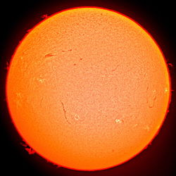
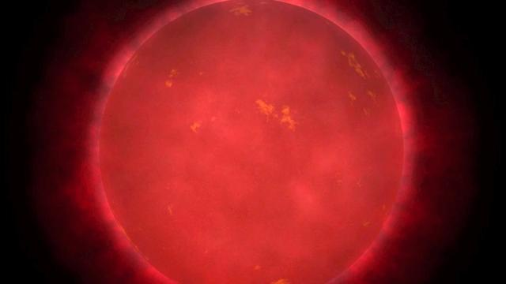
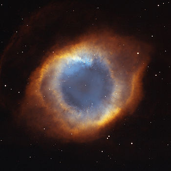

Fekete lyuk
A fekete lyuk a téridő olyan tartománya, ahonnan az erős gravitáció miatt semmi, még a fény sem tud távozni.

Tejútrendszer
A Tejútrendszer a Lokális Galaxiscsoport egyik küllős spirálgalaxisa, melyben a Naprendszer és ezen belül Földünk található

Neutroncsillag
A neutroncsillagok nagy mennyiségű szabad neutront tartalmazó maradványcsillagok.

Kvazár
A kvazár közepén óriási energiaforrás van, nagy valószínűséggel egy fekete lyuk.
Csillagok
A csillagokról
A csillag a csillagászat szaknyelvében olyan égitest, amely nukleáris energiát termel, így saját fénnyel rendelkezik, szemben a bolygókkal, amelyek központi csillaguk fényét verik vissza, és elenyésző saját sugárzást bocsátanak ki.
Nap
A Nap a Naprendszer központi csillaga. Körülötte kering a Föld, valamint a Naprendszerhez tartozó bolygók, törpebolygók, kisbolygók, üstökösök stb. A Földtől körülbelül 150 millió km távolságra van, ami fénysebességgel 8,3 perc. A Nap tartalmazza a Naprendszer anyagának 99,8%-át, átmérője 109 földátmérő. 73,5%-ban hidrogénből áll, amely a központjában zajló magfúzió során héliummá alakul. A Nap egy G2V színképtípusú csillag, a mintegy 10 milliárd évig tartó fősorozatbeli fejlődésének a felénél jár. A fűtőanyagát jelentő hidrogén elhasználása után, 5 milliárd év múlva vörös óriássá duzzad, majd a külső rétegeiből planetáris köd képződik, magja pedig magába roskadva fehér törpévé alakul. Ez egyúttal a földi élet pusztulását fogja magával hozni. Mivel anyagát képlékeny plazma alkotja, a különböző szélességi körön levő területei eltérő sebességgel forognak.
VY Canis Majoris
A VY Canis Majoris (VY CMa) az egyik legnagyobb csillag, de közel sem a legfényesebb: szabad szemmel fényszennyezés-mentes helyen is csak sejthető, megfigyeléséhez távcsőre van szükség. A Nagy Kutya csillagképben található vörös hiperóriás, amelynek sugara 1420 ± 120 nap-sugár, vagy 6,6 csillagászati egység, és mintegy 1200 parszek távolságban (3900 fényév, 3,7×1016 km) található a Földtől. Ellentétben a legtöbb hiperóriás csillaggal, melyek kettős- vagy többszörös csillagrendszerekben fordulnak elő, a VY CMa egyedül álló csillag.
Vörös óriások
A Hertzsprung–Russell-diagram alapján a vörös óriások nagy, nem fősorozatbeli csillagok. A Napnál kissé nagyobb tömegű csillagok, amelyek magjukban már kimerítették hidrogénkészletüket és elkezdték a magot körülvevő rétegben lévő hidrogén égetését. Mivel az energiaforrás így közelebb kerül a felszínhez, a csillag tágulni kezd. A csillag ezáltal ugyan fényesebb lesz, viszont sugara (ebből következően a felszíne is) erősebben növekszik, mint a fényessége. Ennek eredményeképpen a csillag nagyobb lesz, de hidegebb és vörösebb színű, s ebből adódik a név: vörös óriás.
Barna törpék
A barna törpék olyan égitestek, melyek tömege túl kicsi ahhoz, hogy a belsejükben stabil hidrogén-hélium magfúzió jöjjön létre, és így valódi csillagokká váljanak. Ez a reakció ugyanis csak akkor indulhat be, ha egy csillag tömege elég nagy ahhoz, hogy annak magjában a hőmérséklet a 3 millió kelvint meghaladja. Ez a tömeg nagyjából a Nap tömegének 8%-a, másként kifejezve a Jupiter tömegének nyolcvanszorosa. A barna törpék tömege ennél kisebb, a vörös törpecsillagok és az óriásbolygók tömege között van. A keletkezési modellek alapján kialakulásuk közben valamikor a magjukban beindult a magfúzió, de nem a hidrogén, hanem lítium- vagy deutériumfúzió, ehhez 13 jupitertömeg is elegendő, ez jelöli ki alsó tömeghatárukat. Ez a magfúzió kb. 100 ezer évig tarthatott, ami csillagászati időskálán mérve epizódszerű csak.
Fehér törpék
A fehér törpe állapot a csillagfejlődés egyik, asztrofizikailag jól behatárolható, végső stádiuma. A fehér törpecsillagok a csillagászat szemszögéből A színképosztályú, a Nap abszolút fényességének tizedével, századával fénylő csillagok, melyeket gyakran planetáris köd vesz körül. A fehér törpe körüli planetáris köd a megelőző, vörös óriás állapot külső légkörének maradványa, mely a csillagmag gravitációs összehúzódása után marad vissza. A részecskefizika szemszögéből a fehér törpe nagy nyomású anyagkoncentráció, melyben az elektrongáz kvantumfizikailag degenerált formában van jelen. Az anyag ilyen állapotában az elektrongáz további gravitációs összenyomódását a Pauli-féle kizárási elv akadályozza meg, mely szerint két fermion típusú részecske (jelen esetben elektron) nem foglalhatja el ugyanazt a kvantumállapotot egy időben.
A Hertzsprung–Russell-diagram Bővebben